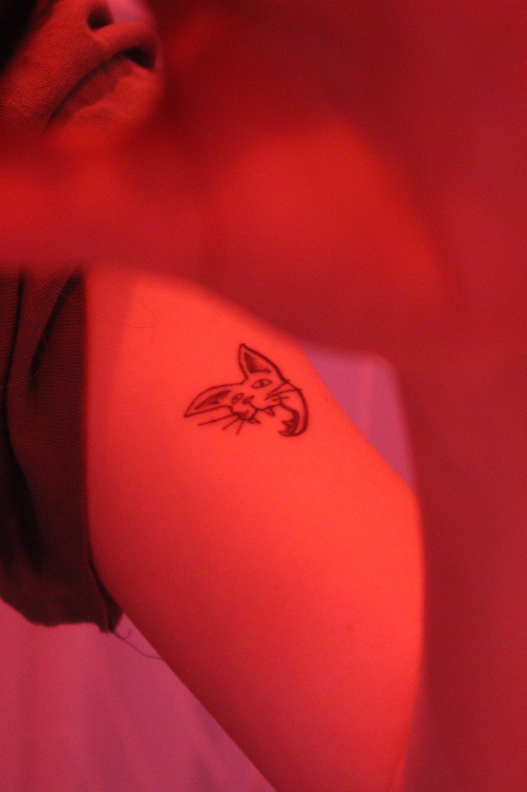

Angry cat head
Angry cat head
TATTOO ONE
Name - Carly Shelton
Tattoo and placement - Cats head on the right bicep
How old are you? - 19 years old.
How old were you when you got this tattoo? - 18 years old.
How many tattoos do you have in total? - 2
How much did it cost you? - $40
Where did you get it done? - A friend called Caroline's apartment, on Mc Dougal.
How long did it take? - Half an hour.
How impulsive was it? - Considered it for two years.
Does this tattoo have a meaning behind it? - I've always loved cats and I'm angry all the time. So angry cat.
Is it your own artwork? - I helped Caroline design the cat.
BACK BACK BACK BACK BACK BACK BACK BACK
